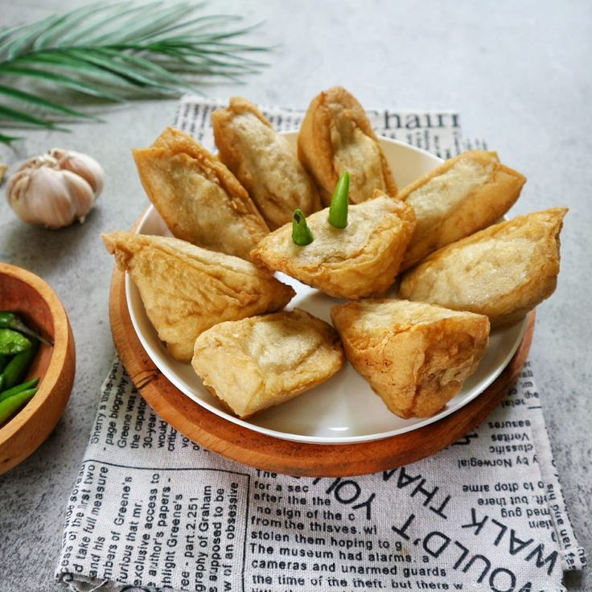
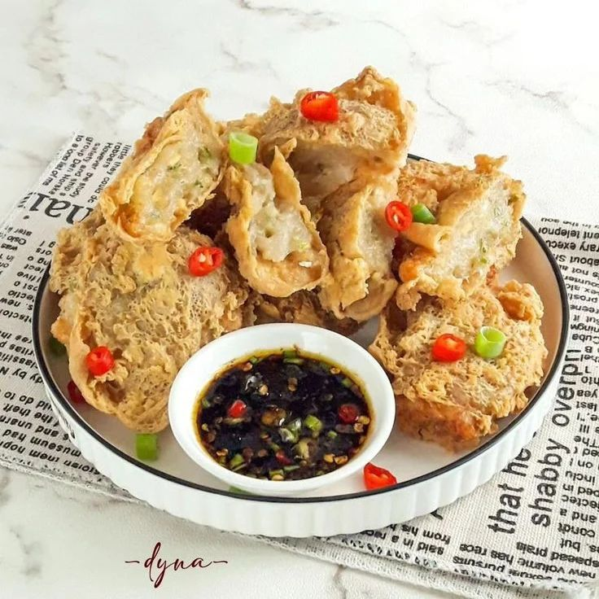

Kuliner Khas Banyuwangi
TAHULEK
Tahu Walik Gurih & Renyah
TAHULEK adalah singkatan dari tahu walek (tahu walik). Tahu walik biasa dijadikan sebagai kudapan atau camilan gorengan yang pas dinikmati kapan saja.
Bagian kulit tahu dibalik ke luar sehingga sisi putih daging tahu berada di bagian luar, lalu diisi adonan daging, ayam, atau aci (tapioka). Makanan ini memiliki tekstur yang sangat renyah di luar dan gurih padat di dalam.
Varian Rasa Tahulek
Pilih atau kombinasikan varian favoritmu!

Varian Original
Rasa gurih alami dengan isian adonan pilihan dan cocolan kecap pedas gurih.
Resep Original
Varian Pedas
Sentuhan bumbu pedas cabai rawit segar yang meresap hingga ke dalam adonan.
Resep PedasVarian Mix
Pilihan untuk yang ingin menyicipi original dan pedas tanpa harus membeli keduanya.